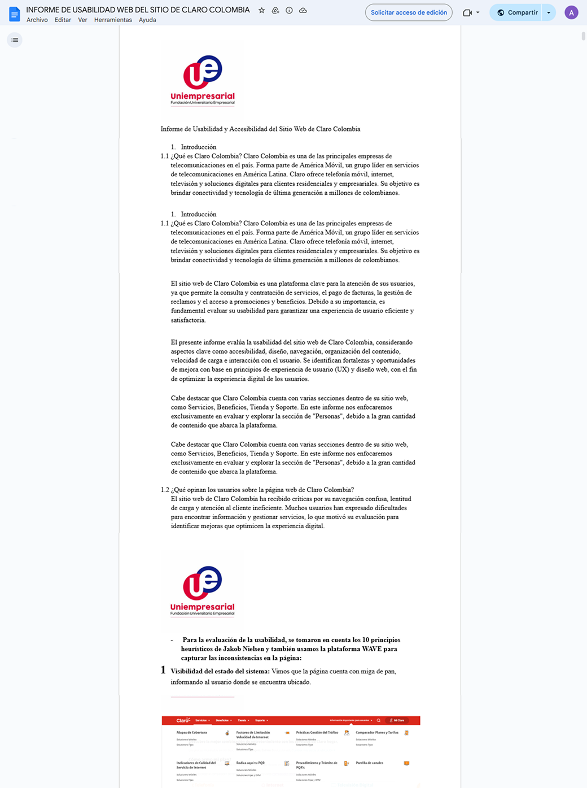
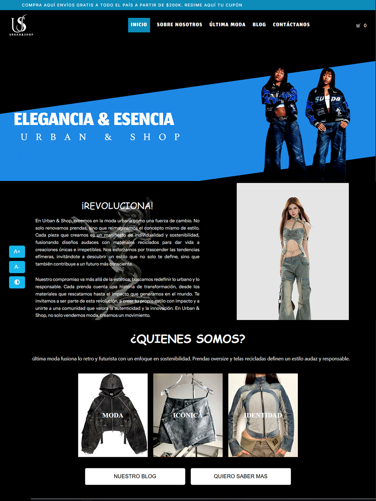
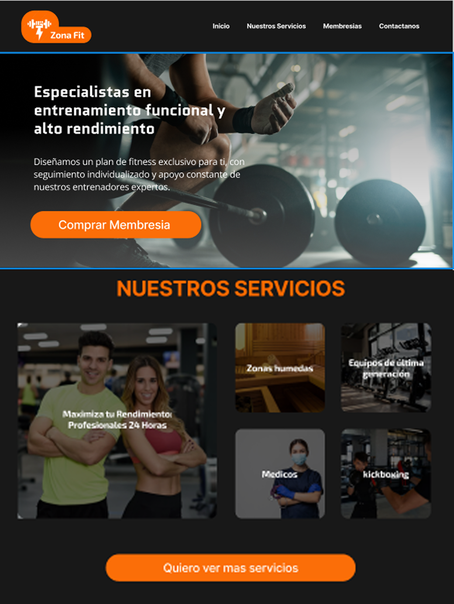
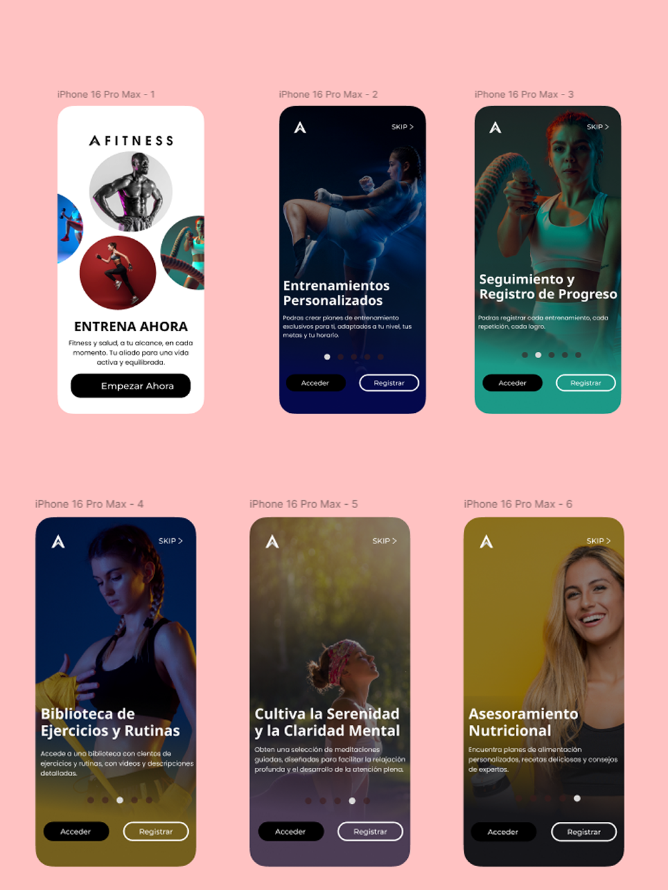

En esta sección presento proyectos de diseño, prototipado y documentación UX, enfocados en el análisis, la estructura de la información y la evaluación de la experiencia de usuario. Trabajo aplicando principios de diseño centrado en el usuario y heurísticas de usabilidad de Jakob Nielsen, realizando análisis exhaustivos de interfaces existentes y diseñando soluciones orientadas a mejorar la claridad, accesibilidad y eficiencia de productos digitales antes de su desarrollo.

Documentación UX / Análisis de usabilidad web
Proyecto de análisis y documentación UX enfocado en evaluar la experiencia de usuario del sitio web de Claro. El objetivo fue identificar problemas de usabilidad, estructura de la información y navegación, y proponer mejoras basadas en principios reconocidos de experiencia de usuario.
Realicé un análisis exhaustivo de la interfaz, evaluando flujos de navegación, jerarquía visual y claridad del contenido. Apliqué las heurísticas de usabilidad de Jakob Nielsen para detectar fricciones en la experiencia del usuario y documenté hallazgos y recomendaciones de mejora de forma estructurada y comprensible.
Análisis heurístico, arquitectura de la información, evaluación de experiencia de usuario, documentación UX.
Este proyecto fortaleció mi capacidad para analizar productos digitales existentes, identificar problemas reales de usabilidad y comunicar soluciones claras que pueden ser implementadas por equipos de diseño y desarrollo.

Diseño UX/UI y prototipado web
Proyecto de diseño UX/UI orientado a la creación de una experiencia e-commerce clara y coherente para una marca de moda reciclable. El objetivo fue definir la estructura visual y los flujos de navegación que facilitaran la exploración de productos y la conversión del usuario.
Diseñé y prototipé la interfaz web en Figma, definiendo la arquitectura de la información, jerarquía visual y flujos de usuario. Apliqué principios de diseño centrado en el usuario para garantizar una navegación intuitiva y alineada con los valores de la marca, sirviendo como base para el desarrollo frontend posterior.
UX/UI, prototipado de alta fidelidad, arquitectura de la información, diseño centrado en el usuario.
El proyecto reforzó mi capacidad para traducir objetivos de negocio en interfaces funcionales, y para conectar procesos de diseño con la ejecución técnica en proyectos web reales.

Diseño UX/UI y prototipado web
Proyecto de diseño UX/UI para una plataforma web orientada a gimnasios, enfocada en presentar servicios, planes y beneficios de forma clara para facilitar la toma de decisiones del usuario. El objetivo fue crear una experiencia sencilla, directa y orientada a conversión.
Diseñé y prototipé la interfaz web en Figma, definiendo la estructura del contenido, jerarquía visual y flujos de navegación. Apliqué principios de usabilidad para reducir fricciones en el proceso de exploración y mejorar la claridad de la información, priorizando una experiencia intuitiva y accesible.
UX/UI, prototipado web, arquitectura de la información, diseño centrado en el usuario.
Este proyecto fortaleció mi capacidad para diseñar interfaces orientadas a objetivos de negocio, equilibrando estética, funcionalidad y experiencia de usuario.

Diseño UX/UI y prototipado mobile
Proyecto de diseño UX/UI para una aplicación móvil enfocada en la gestión y seguimiento de usuarios en gimnasios. El objetivo fue diseñar una experiencia mobile clara que facilitara la interacción del usuario con funcionalidades clave desde el dispositivo móvil.
Diseñé y prototipé la aplicación móvil en Figma, definiendo flujos de usuario, pantallas clave y patrones de interacción mobile. Apliqué principios de usabilidad y diseño centrado en el usuario para garantizar una experiencia intuitiva, fluida y adaptada a contextos móviles.
UX/UI, prototipado mobile, flujos de usuario, usabilidad.
El proyecto reforzó mi comprensión del diseño mobile-first y la adaptación de experiencias digitales a distintos dispositivos y contextos de uso.